source("../_includes/setup.R", local = knitr::knit_global())Lesson 5: Case study: measles
Introduction
Objectives
- To display a published case study using plug-and-play methods with non-trivial model complexities.
- To show how extra-demographic stochasticity can be modeled.
- To demonstrate the use of covariates in pomp.
- To demonstrate the use of profile likelihood in scientific inference.
- To discuss the interpretation of parameter estimates.
- To emphasize the potential need for extra sources of stochasticity in modeling.
Challenges in inference from disease dynamics
- Understanding, forecasting, managing epidemiological systems increasingly depends on models.
- Dynamic models can be used to test causal hypotheses.
- Real epidemiological systems:
- are nonlinear
- are stochastic
- are nonstationary
- evolve in continuous time
- have hidden variables
- can be measured only with (large) errorMeasles is the paradigm for a nonlinear ecological system that can be well described by low-dimensional nonlinear dynamics.
A tradition of careful modeling studies have proposed and found evidence for a number of specific mechanisms, including
- a high value of $R_0$ (c. 15--20)
- under-reporting
- seasonality in transmission rates associated with school terms
- response to changing birth rates
- a birth-cohort effect
- metapopulation dynamics
- fadeouts and reintroductions that scale with city size
- spatial traveling waves- Much of this evidence has been amassed from fitting models to data, using a variety of methods.
- See Rohani and King (2010) for a review of some of the high points.
Model and implementation
Overview
Measles in England and Wales
- We revisit a classic measles data set, weekly case reports in 954 urban centers in England and Wales during the pre-vaccine era (1950–1963).
- We examine questions regarding:
- measles extinction and recolonization
- transmission rates
- seasonality
- resupply of susceptibles- We use a model that
1. expresses our current understanding of measles dynamics
2. includes a long list of mechanisms that have been proposed and demonstrated in the literature
3. cannot be fit by previous likelihood-based methods- We examine data from large and small towns using the same model, something no existing methods have been able to do.
- We ask: does our perspective on this disease change when we expect the models to explain the data in detail?
- What bigger lessons can we learn regarding inference for dynamical systems?
Data sets
Data sets
- He, Ionides, & King, J. R. Soc. Interface (2010)
- Twenty towns, including
- 10 largest
- 10 smaller, chosen at random- Population sizes: 2k–3.4M
- Weekly case reports, 1950–1963
- Annual birth records and population sizes, 1944–1963
Map of cities in the analysis
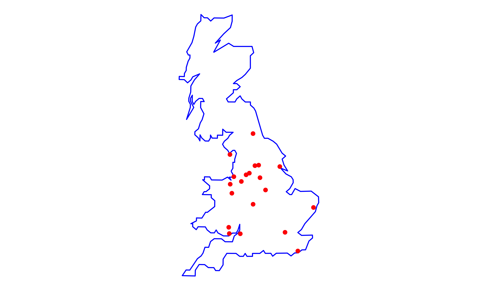
City case counts I: smallest 8 cities
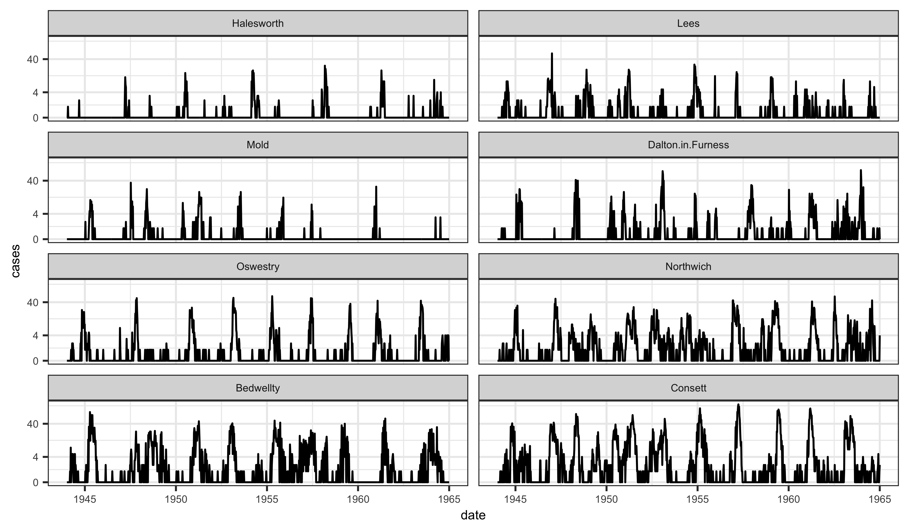
City case counts II: largest 8 cities
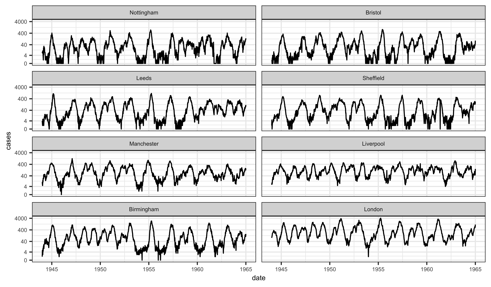
Modeling
Continuous-time Markov process model
Continuous-time Markov process model
- Covariates:
- $B(t) = \text{birth rate, from data}$
- $N(t) = \text{population size, from data}$- Entry into susceptible class: \[\mu_{BS}(t) = (1-c)\,B(t-\tau)+c\,\delta(t-\lfloor t\rfloor)\,\int_{t-1}^{t}\,B(t-\tau-s)\,ds\]
- $c = \text{cohort effect}$
- $\tau = \text{school-entry delay}$
- $\lfloor t \rfloor = \text{most recent 1 September before}\ t$- Force of infection: \[\mu_{SE}(t) = \tfrac{\beta(t)}{N(t)}\,(I+\iota)^{\alpha}\,\zeta(t)\]
- $\iota = \text{imported infections}$
- $\zeta(t) = \text{Gamma white noise with intensity}\,\sigma_{SE}$ [@He2010,Bhadra2011]
- school-term transmission:
$$\beta(t) = \begin{cases}\beta_0\,\big(1+a(1-p)/p\big) &\text{during term}\\\beta_0\,(1-a) &\text{during vacation}\end{cases}$$
- $a= \text{amplitude of seasonality}$
- $p=0.7589$ is the fraction of the year children are in school.
- The factor $(1-p)/p$ ensures that the average transmission rate is $\beta_0$.
- Overdispersed binomial measurement model: \(\mathrm{cases}_t\,\vert\,\Delta{N}_{IR}=z_t \sim \dist{Normal}{\rho\,z_t,\rho\,(1-\rho)\,z_t+(\psi\,\rho\,z_t)^2}\)
Model implementation in pomp
Implementation in pomp
- Codes that implement the model in pomp are to be found on the course website.
- In those codes, we first load the needed packages and set the random seed, to allow reproducibility.
- Note that the codes make heavy use of the ggplot2 plotting package and tidyverse methods.
- We also use the convenient R pipe syntax,
|>.
Data and covariates
- The data are measles reports from 20 cities in England and Wales.
- We also have information on the population sizes and birth-rates in these cities; we’ll treat these variables as covariates.
- The codes illustrate the pre-processing of the measles and demography data using London as an example.
Measles case reports from London:
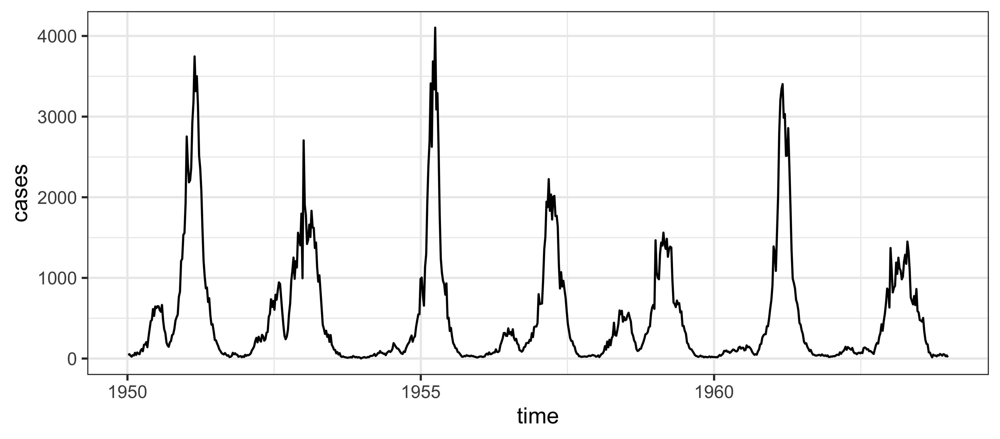
We smooth the covariates and delay the entry of newborns into the susceptible pool.
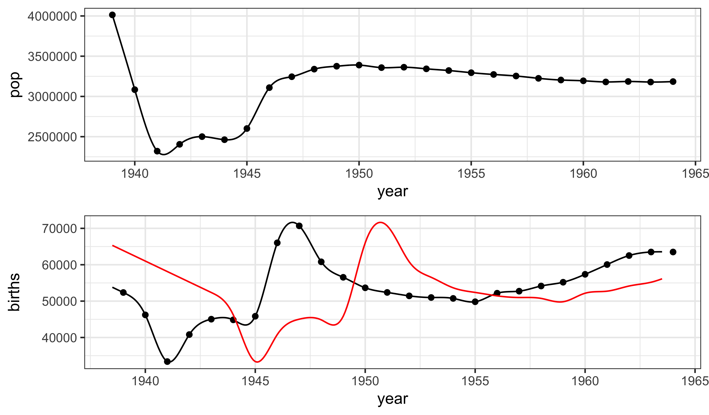
The partially observed Markov process model
We require a simulator for our model. Notable complexities include:
- Incorporation of the known birthrate.
- The birth-cohort effect: a specified fraction (
cohort) of the cohort enter the susceptible pool all at once. - Seasonality in the transmission rate: during school terms, the transmission rate is higher than it is during holidays.
- Extra-demographic stochasticity in the form of a Gamma white-noise term acting multiplicatively on the force of infection.
- Demographic stochasticity implemented using Euler-multinomial distributions.
Implementation of the process model
Let’s walk through the rprocess C snippet.
double beta, br, seas, foi, dw, births;
double rate[6], trans[6];
// cohort effect
if (fabs(t-floor(t)-251.0/365.0) < 0.5*dt)
br = cohort*birthrate/dt + (1-cohort)*birthrate;
else
br = (1.0-cohort)*birthrate; // term-time seasonality
t = (t-floor(t))*365.25;
if ((t>=7 && t<=100) ||
(t>=115 && t<=199) ||
(t>=252 && t<=300) ||
(t>=308 && t<=356))
seas = 1.0+amplitude*0.2411/0.7589;
else
seas = 1.0-amplitude; // transmission rate
beta = R0*(gamma+mu)*seas;
// expected force of infection
foi = beta*pow(I+iota,alpha)/pop;
// white noise (extrademographic stochasticity)
dw = rgammawn(sigmaSE,dt); rate[0] = foi*dw/dt; // stochastic force of infection
rate[1] = mu; // natural S death
rate[2] = sigma; // rate of ending of latent stage
rate[3] = mu; // natural E death
rate[4] = gamma; // recovery
rate[5] = mu; // natural I death // Poisson births
births = rpois(br*dt);
// transitions between classes
reulermultinom(2, S, &rate[0], dt, &trans[0]);
reulermultinom(2, E, &rate[2], dt, &trans[2]);
reulermultinom(2, I, &rate[4], dt, &trans[4]); S += births - trans[0] - trans[1];
E += trans[0] - trans[2] - trans[3];
I += trans[2] - trans[4] - trans[5];
R = pop - S - E - I;
W += (dw - dt)/sigmaSE; // standardized i.i.d. white noise
C += trans[4]; // true incidenceProcess model observations
- In the above,
Crepresents the true incidence, i.e., the number of new infections occurring over an interval. - Since recognized measles infections are quarantined, we argue that most infection occurs before case recognition so that true incidence is a measure of the number of individuals progressing from the I to the R compartment in a given interval.
State initializations
We complete the process model definition by specifying the distribution of initial unobserved states. The following codes assume that the fraction of the population in each of the four compartments is known.
double m = pop/(S_0+E_0+I_0+R_0);
S = nearbyint(m*S_0);
E = nearbyint(m*E_0);
I = nearbyint(m*I_0);
R = nearbyint(m*R_0);
W = 0;
C = 0;Measurement model
- We’ll model both under-reporting and measurement error.
- We want \(\mathbb{E}[\mathrm{cases}|C] = \rho\,C\), where \(C\) is the true incidence and \(0<\rho<1\) is the reporting efficiency.
- We’ll also assume that \(\mathrm{Var}[\mathrm{cases}|C] = \rho\,(1-\rho)\,C + (\psi\,\rho\,C)^2\), where \(\psi\) quantifies overdispersion.
- Note that when \(\psi=0\), the variance-mean relation is that of the binomial distribution. To be specific, we’ll choose \(\mathrm{cases}\;\vert\;C \sim f(\cdot\;\vert\;\rho,\psi,C)\), where \[\begin{equation*} \begin{split} f(c\;\vert\;\rho,\psi,C) = &\Phi(c+\tfrac{1}{2},\rho\,C,\rho\,(1-\rho)\,C+(\psi\,\rho\,C)^2)\\ &-\Phi(c-\tfrac{1}{2},\rho\,C,\rho\,(1-\rho)\,C+(\psi\,\rho\,C)^2). \end{split} \end{equation*}\] Here, \(\Phi(x,\mu,\sigma^2)\) is the c.d.f. of the normal distribution with mean \(\mu\) and variance \(\sigma^2\).
The following computes \(\mathbb{P}[\mathrm{cases}|C]\).
double m = rho*C;
double v = m*(1.0-rho+psi*psi*m);
double tol = 0.0;
if (cases > 0.0) {
lik = pnorm(cases+0.5,m,sqrt(v)+tol,1,0)
- pnorm(cases-0.5,m,sqrt(v)+tol,1,0) + tol;
} else {
lik = pnorm(cases+0.5,m,sqrt(v)+tol,1,0) + tol;
}
if (give_log) lik = log(lik);The following codes simulate \(\mathrm{cases} | C\).
double m = rho*C;
double v = m*(1.0-rho+psi*psi*m);
double tol = 0.0;
cases = rnorm(m,sqrt(v)+tol);
if (cases > 0.0) {
cases = nearbyint(cases);
} else {
cases = 0.0;
}Constructing the pomp object
dat |>
pomp(t0=with(dat,2*time[1]-time[2]),
time="time",
rprocess=euler(rproc,delta.t=1/365.25),
rinit=rinit,
dmeasure=dmeas,
rmeasure=rmeas,
covar=covariate_table(covar,times="time"),
accumvars=c("C","W"),
statenames=c("S","E","I","R","C","W"),
paramnames=c("R0","mu","sigma","gamma","alpha","iota",
"rho","sigmaSE","psi","cohort","amplitude",
"S_0","E_0","I_0","R_0")
) -> m1Estimation
He, Ionides, and King (2010)
Estimates from He, Ionides, and King (2010)
He, Ionides, and King (2010) estimated the parameters of this model. The full set of estimates is included in the R code accompanying this document, where they are read into a data frame called mles.
We verify that we get the same likelihood as He, Ionides, and King (2010).
library(doFuture)
plan(multicore)
foreach(i=1:4, .combine=c,
.options.future=list(seed=998468235L)
) %dopar% {
pfilter(m1,Np=10000,params=theta)
} -> pfslogmeanexp(logLik(pfs),se=TRUE) est se
-3801.6339190 0.2186696 Simulations
Simulations at the MLE
m1 |>
simulate(params=theta,nsim=3,format="d",include.data=TRUE) |>
ggplot(aes(x=time,y=cases,group=.id,color=(.id=="data")))+
guides(color="none")+
geom_line()+facet_wrap(~.id,ncol=2)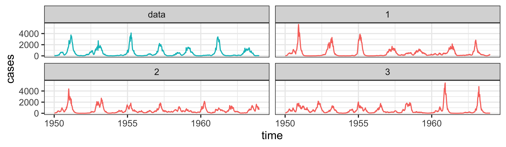
Parameter estimation
Parameter transformations
The parameters are constrained to be positive, and some of them are constrained to lie between \(0\) and \(1\).
We can turn the likelihood maximization problem into an unconstrained maximization problem by transforming the parameters.
Specifically, to enforce positivity, we log transform, to constrain parameters to \((0,1)\), we logit transform, and to confine parameters to the unit simplex, we use the log-barycentric transformation.
pt <- parameter_trans(
log=c("sigma","gamma","sigmaSE","psi","R0"),
logit=c("cohort","amplitude"),
barycentric=c("S_0","E_0","I_0","R_0")
)Model diagnostics
ARMA benchmark
- Linear, Gaussian auto-regressive moving-average (ARMA) models provide a flexible non-mechanistic benchmark comparison.
- We fit an ARMA(2,2) model to \(\log(y_n^*+1)\) and correct the likelihood back to the untransformed data (see Lesson~6 for more details). This has \(p=5\) parameters and a log-likelihood of \(\ell=-3958.3\) for London.
- The SEIR model has \(\ell=-3804.9\) with \(p=12\).
- Minimizing the AIC, \(2p-2\ell\), is equivalent to maximizing \(\ell-p\).
- The aim of mechanistic modeling is not to beat benchmarks, but falling far behind can diagnose problems.
- “Far” means many log units: differences of log-likelihoods are invariant to the scale of measurement; ratios of log-likelihoods are not.
Log-likelihood anomalies
The benchmark and model log-likelihoods can both be decomposed as a sum of conditional log-likelihoods, \(\ell(\theta)=\sum_{n=1}^N \ell_n(\theta)\) where \(\ell_n(\theta)=\log f_{Y_n|Y_{1:n-1}}(y^*_n|y^*_{1:n-1};\theta)\).
The {} for the model at time \(t_n\) is the difference between the model conditional log-likelihood and that of the benchmark.
Anomalies can be used similarly to regression residuals: they can indicate points where the model fails; patterns can reveal scope for mode improvement.
Conditional log-likelihoods are not scale-invariant, but anomalies are.
Anomaly plot for London
- Here, the main anomalies are positive: the log-scale ARMA model is not good at explaining very low counts.
- Negative anomalies result if cases fail to drop when susceptibles should be depleted. These are not big anomalies.
- One major outlier was previously identified and “cleaned.”
Particle filter variance for London
- The variance of the
pfilterlog-likelihood estimate is approximately the sum of the variances of the conditional log-likelihoods. - Observations with high variance are numerically problematic.
- Here, none are larger than 1. We have 2000 particles here, which seems just enough, though more may be preferable.
Findings
Results from He, Ionides, and King (2010)
The linked document shows how a likelihood profile can be constructed using IF2. The fitting procedure used is as follows:
- A large number of searches were started at points across the parameter space.
- Iterated filtering was used to maximize the likelihood.
- We obtained point estimates of all parameters for 20 cities.
- We constructed profile likelihoods to quantify uncertainty in London and Hastings.
Notable findings
Imported infections
\[\text{force of infection} = \mu_{SE}=\frac{\beta(t)}{N(t)}\,(I+\iota)^{\alpha}\,\zeta(t)\]
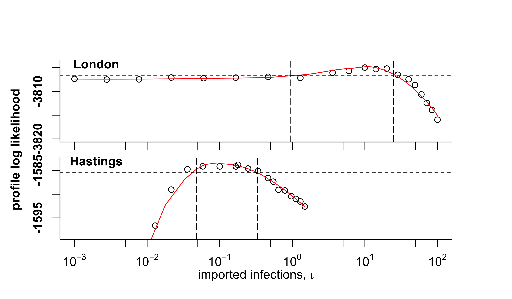
Seasonality

Cohort effect
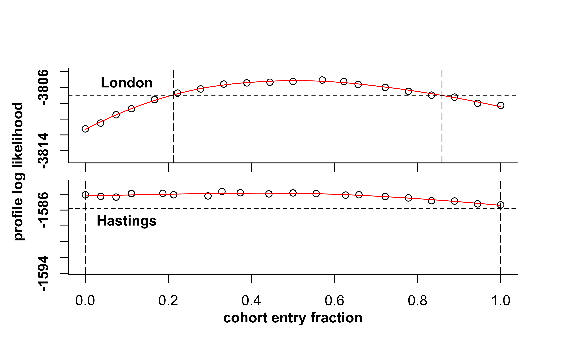
Birth delay
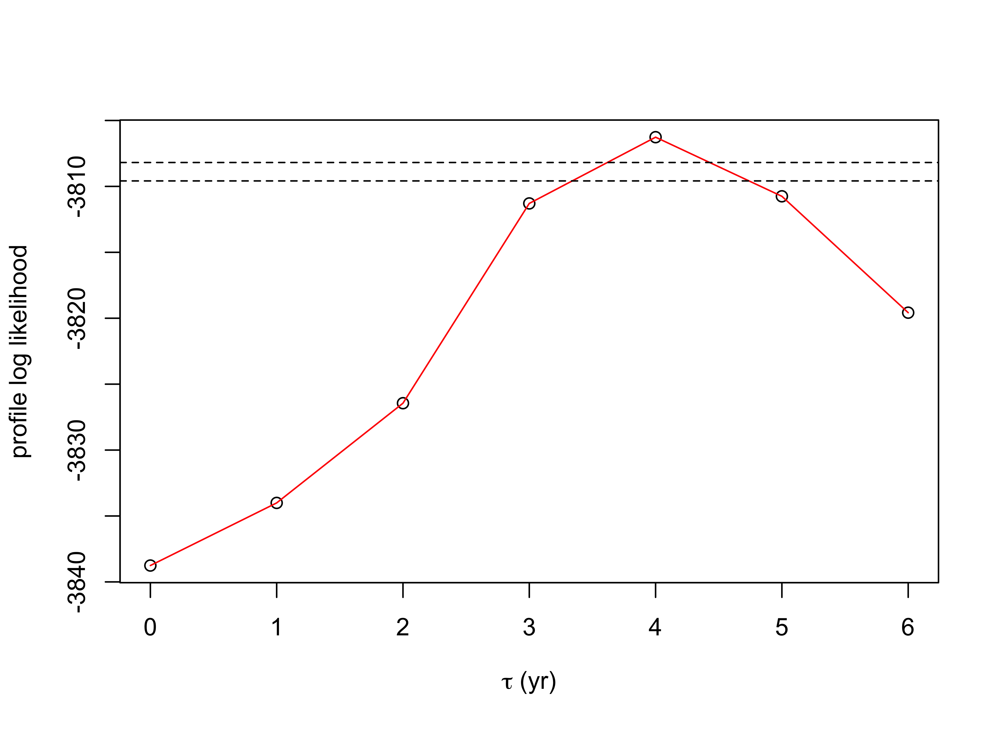
Profile likelihood for birth-cohort delay, showing 95% and 99% critical values of the log likelihood.
Reporting rate
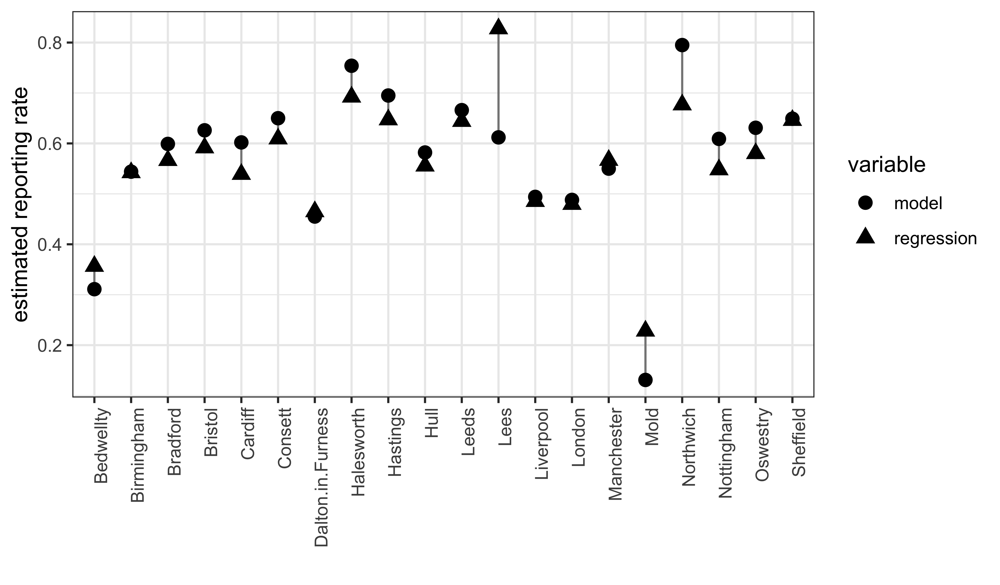
Predicted vs observed critical community size

Problematic results
\(R_0\) estimates inconsistent with literature
- Recall that \(R_0\) : a measure of how communicable an infection is.
- Existing estimates of \(R_0\) (c. 15–20) come from two sources: serology surveys, and models fit to data using feature-based methods.
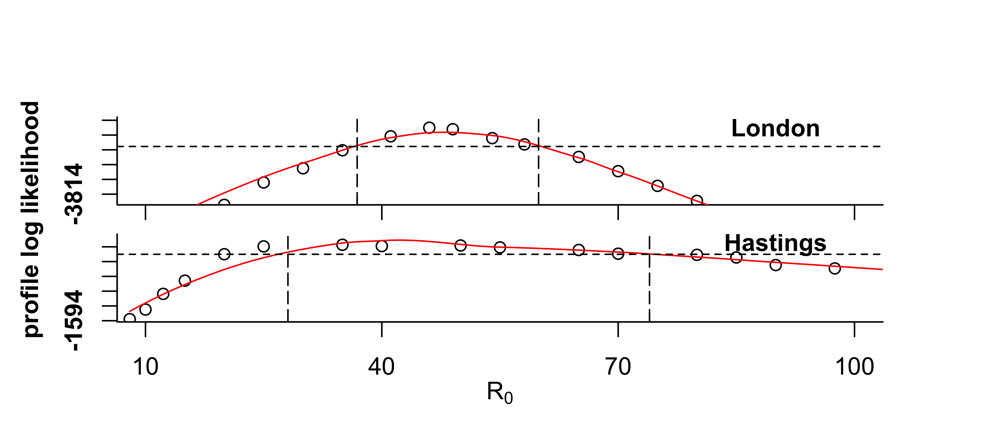
Parameter estimates
\(r=\mathrm{cor}_{S}({\cdot},{N_{1950}})\) (Spearman rank correlation)
Extrademographic stochasticity
\[\mu_{SE}=\frac{\beta(t)}{N(t)}\,(I+\iota)\,\zeta(t)\]
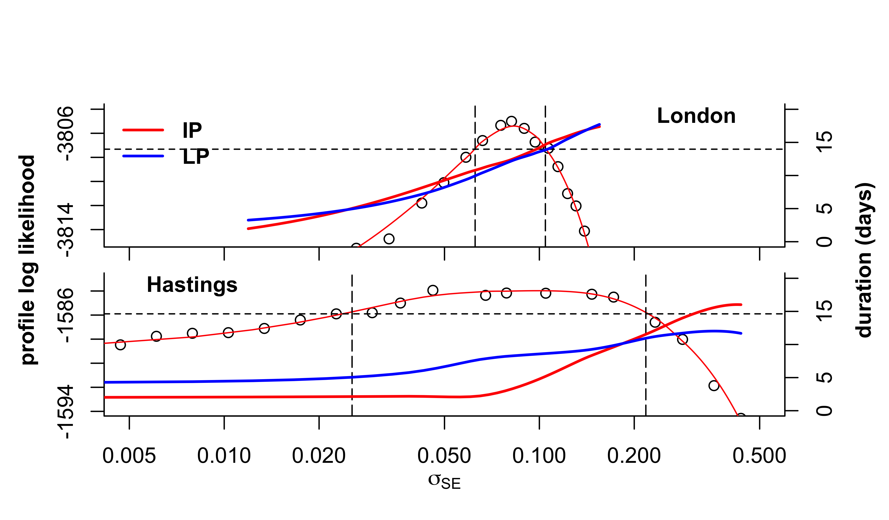
Questions
- What does it mean that parameter estimates from the fitting disagree with estimates from other data?
- How can one interpret the correlation between infectious period and city size in the parameter estimates?
- How do we interpret the need for extrademographic stochasticity in this model?
Simulations at the MLE
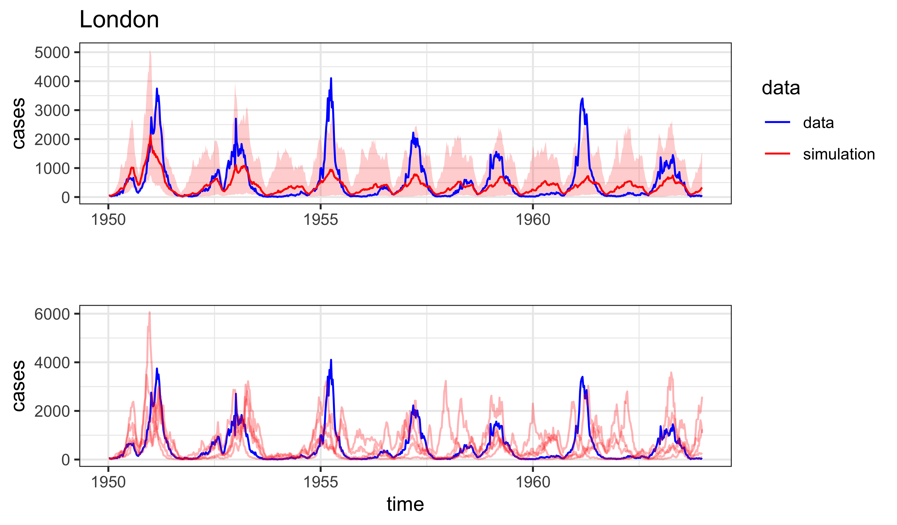
Exercises
Reformulate the model
- Modify the He, Ionides, and King (2010) model to remove the cohort effect. Run simulations and compute likelihoods to convince yourself that the resulting codes agree with the original ones for
cohort = 0. - Now modify the transmission seasonality to use a sinusoidal form. How many parameters must you use? Fixing the other parameters at their MLE values, compute and visualize a profile likelihood over these parameters.
Extrademographic stochasticity
Set the extrademographic stochasticity parameter \(\sigma_{SE}=0\), set \(\alpha=1\), and fix \(\rho\) and \(\iota\) at their MLE values, then maximize the likelihood over the remaining parameters.
- How do your results compare with those at the MLE? Compare likelihoods but also use simulations to diagnose differences between the models.
References
References
He, Daihai, Edward L. Ionides, and Aaron A. King. 2010. “Plug-and-Play Inference for Disease Dynamics: Measles in Large and Small Populations as a Case Study.” J R Soc Interface 7 (June): 271–83. https://doi.org/10.1098/rsif.2009.0151.
Rohani, Pejman, and Aaron A. King. 2010. “Never Mind the Length, Feel the Quality: The Impact of Long-Term Epidemiological Data Sets on Theory, Application and Policy.” Trends Ecol Evol 25 (10): 611–18. https://doi.org/10.1016/j.tree.2010.07.010.
License, acknowledgments, and links
This lesson is prepared for the Simulation-based Inference for Epidemiological Dynamics module at the Summer Institute in Statistics and Modeling in Infectious Diseases, SISMID.
The materials build on previous versions of this course and related courses.
Licensed under the Creative Commons Attribution-NonCommercial license. Please share and remix non-commercially, mentioning its origin.
Produced with R version 4.4.0 and pomp version 5.9.
Compiled on 2024-06-17.